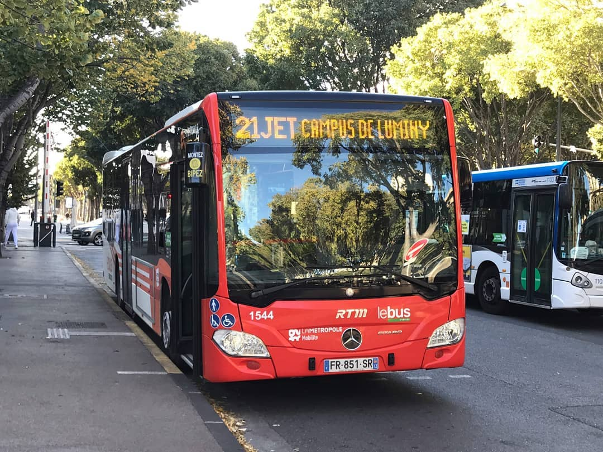

Cette page fournit la documentation complète du site B1 ou 21JET, pour comprendre son
fonctionnement, les différentes méthodes utilisées, ainsi qu'une méthodologie pour déterminer les
paramètres qui vous conviennent.
Attention : Ce site ne donne qu'une estimation
précise du meilleur bus à prendre, il n'y a personne devant l'arrêt qui guette les horaires et qui fait
des calculs extrêmement compliqués pour vous permettre de gratter 3 minutes. Prenez les informations
fournis avec de très grosses pincettes, les données utilisés viennent de l'API officiel de la RTM. Oui,
j'avais rien d'autre à faire de ma vie que de faire ce site.

Rare image du 21JET en activité un lundi matin
Utilisation
B1 ou 21JET détermine à la station
Métro Rond Point du Prado quel bus prendre entre le
B1 et le
21JET pour arriver le plus rapidement possible à la station
Luminy Parc National
des
Calanques.
Lorsque vous arrivez sur le site, selon les paramètres sélectionnés, le logo du
B1 s'affichera s'il
faut prendre le B1, et le logo du
21JET s'affichera s'il faut prendre le 21JET.
Les données se mettent à jour toutes les
60 secondes. Vous pouvez rafraîchir la page pour obtenir les
derniers résultats calculés. Il se peut que ces résultats ne soient pas encore disponibles immédiatement,
comptez un léger délai selon la puissance de nos supers ordinateurs.
Les paramètres que vous pouvez configurer sont :
- Les
algorithmes : Vous pouvez choisir la méthode utilisée pour calculer le bus le plus rapide.
- Les
théorèmes : Vous pouvez choisir aucun, un ou plusieurs théorèmes pour chaque algorithme. Ils
vous permettent d'impacter les calculs en ajoutant des aléas et des contrôles.
Algorithmes
Seven minutes rule
L'algorithme de la règle des 7 minutes précise que si le prochain 21JET arrive au plus 7
minutes après le prochain B1, alors il faut prendre le 21JET.
Cette simple règle est un moyen efficace d'estimer grossièrement mais rapidement le meilleur bus à
prendre. Nous vous conseillons de l'utiliser si vous n'avez vraiment pas le temps d'attendre car le B1
est juste devant vous, sinon, utilisez un meilleur algorithme plus performant.
Seeking head
L'algorithme de la Tête chercheuse consiste à accumuler les écarts des temps réels de trajet entre
chaque
station.
En théorie, on obtient une estimation proche du temps réel entre Métro Rond Point du Prado et Luminy.
Cependant, l'API de la RTM limite la vue des derniers bus traquables à 2. Cela veut dire que traquer un
bus devient impossible si le prochain bus à prendre à Métro Rond Point du Prado n'est pas au plus
l'avant-dernier bus qui arrivera à Luminy.
Par conséquent, nous allons traquer le bus jusqu'à qu'il ne soit plus traquable à une station \( S_{n}
\). À
partir de cette station, nous allons utiliser les valeurs théoriques. Ces valeurs théoriques seront des
moyennes des écarts théoriques à tout temps, car on considère que l'heure qu'il est n'influence pas ces
valeurs et
qu'elles resteront, dans le meilleur des cas, constantes.
Pour cet algorithme, vous pouvez choisir parmi deux théorèmes :
-
Écart maximum :
Désactivé : La moyenne des écarts
des temps théoriques est utilisée, et l'écart-type est également ajouté pour prendre en compte les
fructuations.
Activé : Les valeurs maximums sont directement
utilisées.
-
Théorème d'Obélisque : Entre la station Métro Rond Point du Prado et Obélisque, on théorise un
ralentissement important entre chacune de ces stations dû à une importante population agée qui veulent
descendre à la station Obélisque. Le taux de ce ralentissement est théorisé à
25%, mais cette valeur
peut-être changée dans les jours à venir, voire même être dépendante de l'heure.
All roads lead to Luminy Parc National des Calanques